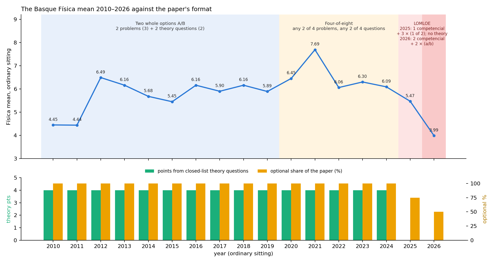
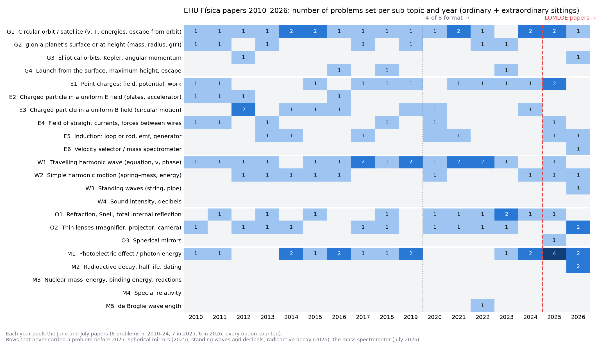
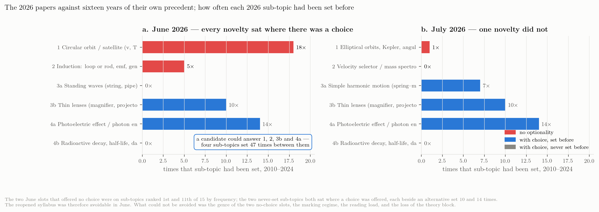

Sixteen years of one paper
The Basque Física exam 2010–2026: format, theory questions, the de facto syllabus and the marking rules — and what 2025 and 2026 changed
Why the paper’s own history matters
Chapter 11 compared the 2025 and 2026 papers of nine communities and found that the Basque paper was the only one that changed genre between the two years. That comparison is horizontal. This chapter is vertical: it reads the Basque paper against itself, from 2010 to 2026, because the students who sat in June 2026 were prepared by teachers whose expectations were shaped by fifteen years of a very stable exam — and the account of that stability given by the coordinator, who has held the Física coordination since the 2018 edition (a two-option paper with two problems and two “theory questions”; theory drawn from a published list of titles; problems drawn, by long-standing convention, from a small subset of the syllabus; the modern-physics problem always photoelectric by a decision of the coordinators taken some twenty years ago and confirmed by the teachers’ meeting of 2024 for the 2025 paper, then lifted for 2026) can be checked against the papers.
All 34 papers (ordinary and extraordinary sittings, 2010–2026) and the guidance documents that EHU published for the 2025 model were downloaded from ehu.eus on 19 September (Data hunt; files in sources/exams_ehu_hist/, hashed in the source registry). Every problem and every theory question was inventoried by sub-topic (data/ehu_problem_inventory_2010_2026.csv, data/ehu_theory_inventory.csv; script scripts/08_ehu_history.py). The official list of theory titles, which EHU no longer publishes online, was supplied by the coordinator and is archived with the papers. Two things could not be verified from documents and are reported as the coordinator’s account: the minutes of the 2024 and 2025 coordination meetings (EHU does not publish them) and the origin of the photoelectric convention. The papers themselves settle the rest.
Four formats in sixteen years
data/ehu_formats.csv.
| Years | Format | Problems | Theory questions | Choice | Optional % |
|---|---|---|---|---|---|
| 2010–2019 | Two whole options (A/B) | 2 × 3 pts | 2 × 2 pts (closed list of titles) | choose one of two complete papers | 100 |
| 2020–2024 | Four-of-eight (COVID format, kept to 2024) | answer 2 of 4 (3 pts each) | answer 2 of 4 (2 pts each, closed list) | any 2 of 4 problems and any 2 of 4 questions | 100 |
| 2025 | LOMLOE year 1 | 4 × 2.5 pts; block A competencial and obligatory; B, C, D choose 1 of 2 | none (theory only through explanations inside problems) | 1 of 2 in three blocks | 75 |
| 2026 | LOMLOE year 2 | 4 × 2.5 pts; 1 and 2 competencial and obligatory; 3 and 4 choose a/b | none | 1 of 2 in two blocks | 50 |

From 2010 to 2019 the paper offered two complete options, A and B, each with two three-point problems and two two-point “cuestiones”; the student chose one option and could not mix. The COVID paper of 2020 replaced this with a four-of-eight format — any two of four problems and any two of four questions — and, as the coordinator notes, the format was never withdrawn: it ran unchanged through 2024. Both formats made the whole paper optional in the sense used in Chapter 11 (every mark comes from a slot where the student chooses), but the 2020–2024 rule gave far more choice than the A/B rule, and it coincides with the two highest means of the series (7.69 in 2021, 6.49 in 2012, with 2020 third at 6.45).
The 2025 paper broke with both: seven problems in four blocks of 2.5 points, no theory questions at all, one block (A, gravitation) obligatory and written as a contextualised “competencial” exercise, the other three blocks with a choice of one problem out of two. The 2026 paper went one step further: six items, blocks A and B (gravitation, electromagnetism) both obligatory and competencial, blocks C and D with options a/b, a constants table on the paper, and most exercises split into six to nine numbered sub-tasks (option C1 has three lettered parts and none) carrying explicit 0.25-point marks.
Forty per cent of the marks from a list of titles
sources/exams_ehu_hist/ehu_theory_list_official.pdf), with the number of times each was set as a “cuestión” in 2010–2024 (120 questions in 30 papers). File: data/ehu_theory_inventory.csv.
| No. | Title in the official list (Spanish version, abridged) | Times set 2012–2024 | Times set 2010–2024 |
|---|---|---|---|
| 1 | Movimiento armónico simple. Ejemplos. Ecuación. Definición de las magnitudes. Ecuaciones de la velocidad y de la aceleración. | 7 | 7 |
| 2 | Movimiento ondulatorio en una dimensión. Ecuación. Definición de las magnitudes. Velocidad de propagación. Distinción entre ondas transversales y longitudinales. | 4 | 5 |
| 3 | Reflexión y refracción de ondas: concepto, índice de refracción, leyes… Conceptos de ángulo límite y reflexión total. | 5 | 5 |
| 4 | Ondas estacionarias. Definición y ejemplos. | 3 | 3 |
| 5 | Lupa. Descripción. Esquema de la formación de imágenes. Aumento. | 5 | 6 |
| 6 | Cámara fotográfica. Descripción. Esquema de la formación de imágenes. | 2 | 2 |
| 7 | El ojo humano. Descripción. Esquema de la formación de imágenes. | 4 | 4 |
| 8 | Defectos de la visión. Hipermetropía y miopía. | 4 | 4 |
| 9 | Ley de Gravitación Universal de Newton. Intensidad de campo. Campo creado por una masa puntual (o esférica). Ejemplo: el campo gravitatorio terrestre. | 4 | 4 |
| 10 | Campos de fuerza conservativos y no conservativos. Energía potencial gravitatoria. Potencial gravitatorio. Energía mecánica total. Principio de conservación de la energía. | 4 | 5 |
| 11 | Leyes de Kepler. Enunciados. Deducción de la 3ª Ley para órbitas circulares a partir de la Ley de Gravitación. | 9 | 10 |
| 12 | Líneas de fuerza y superficies equipotenciales en el campo gravitatorio creado por una masa puntual (o esférica). | 4 | 4 |
| 13 | Ley de Coulomb. Intensidad de campo eléctrico. Campo electrostático creado por una carga puntual positiva y negativa; líneas de fuerza. | 5 | 8 |
| 14 | Fuerza ejercida dentro de un campo magnético uniforme: a) sobre una carga puntual en movimiento; b) sobre un conductor lineal de corriente. | 4 | 5 |
| 15 | Fuerzas entre corrientes eléctricas. Dos hilos rectos, paralelos e infinitos. Definición de amperio. | 4 | 5 |
| 16 | Campos magnéticos producidos por corrientes. Ley de Biot-Savart: a) corriente recta e infinita; b) corriente circular (espira). | 1 | 2 |
| 17 | Ley de Faraday y Lenz para la inducción electromagnética. Valor de la fuerza electromotriz inducida. Sentido de la corriente. | 6 | 8 |
| 18 | Generador de corrientes alternas sinusoidales (alternador). | 3 | 3 |
| 19 | Efecto fotoeléctrico. Descripción. Explicación cuántica. Teoría de Einstein. Frecuencia umbral. Trabajo de extracción. | 8 | 9 |
| 20 | Radiactividad natural. Desintegración radiactiva. Emisión de partículas alfa, beta y gamma. Leyes de Soddy y Fajans. | 10 | 12 |
| 21 | Fisión nuclear. Descripción y ejemplos. Bombas y centrales nucleares. Pérdida de masa. Ecuación de Einstein. | 5 | 6 |
| 22 | Fusión nuclear. Descripción y ejemplos. Bombas y posibles centrales nucleares. Pérdida de masa. Ecuación de Einstein. | 3 | 3 |
Until 2024, four of the ten points were awarded for two theory questions, and from 2012 the questions were not questions in the usual sense: they reproduced, verbatim, the title of an entry in a syllabus list. (The sixteen questions of 2010 and 2011 are the exception: they are free-form, and three of them do not correspond to a single title at all. From 2012 onwards all 104 are verbatim.) The titles set are of the kind: “Lupa. Descripción. Esquema de la formación de imágenes. Aumento.” (July 2022), “Defectos de la visión. Hipermetropía y miopía.” (June 2019), “Reflexión y refracción de ondas: concepto, índice de refracción, leyes… Conceptos de ángulo límite y reflexión total.” (June 2024). The list was an official document: a bilingual sheet issued jointly by the university and the Basque Department of Education, Cuestiones teóricas, which states that the questions “aparecerán (tal y como están escritas) en la Evaluación para el Acceso a la Universidad”, gives for each title a guide to the content a student should include, and was sent to the correctors as their marking reference. It has 22 titles, and the inventory reconstructed from the papers before the document was in hand recovers exactly those 22: every title was set at least once between 2010 and 2024 (the photographic camera twice, the Biot–Savart title twice; radioactivity twelve times, Kepler ten, the photoelectric effect nine); five titles — radioactivity, Kepler’s laws, the photoelectric effect, Faraday–Lenz and Coulomb’s law — account for 47 of the 120 questions. The document is no longer online, but any teacher who kept it, or the papers, had the whole of the theory component in advance, together with the marking guide. Under the A/B format a student who could reproduce two entries from that list held 4 points before touching a problem; under the four-of-eight format, with four titles on the paper and two to be chosen, the same 4 points were even more accessible. In 2025 this component disappeared in a single step. The other communities’ 2025–2026 papers offer no exact analogue: Andalucía keeps a large share of short “razone” conceptual items (about 5–6 of 10 expected points), Valencia had 1.5-point “cuestiones” in 2025 and dropped them in 2026, Castilla-La Mancha’s 2026 paper has two fixed 0.5-point items, and Asturias, Madrid, Cataluña, Extremadura and Canarias set none in either year — so removing theory is not, by itself, what separates Euskadi from the communities that rose; what is specific to Euskadi is going from 4 points of closed-list theory to none in one year.
The de facto syllabus: which problems were actually set
data/ehu_problem_inventory_2010_2026.csv.
| Block | Problem sub-topic | 2010–19 (20 papers) | 2020–24 (10 papers) | 2025 (2) | 2026 (2) |
|---|---|---|---|---|---|
| Gravitación | Circular orbit / satellite (v, T, energies, escape from orbit) | 12 | 6 | 2 | 1 |
| Gravitación | g on a planet’s surface or at height (mass, radius, g(r)) | 5 | 2 | 0 | 0 |
| Gravitación | Elliptical orbits, Kepler, angular momentum | 1 | 0 | 0 | 1 |
| Gravitación | Launch from the surface, maximum height, escape | 2 | 1 | 0 | 0 |
| Electromagnetismo | Point charges: field, potential, work | 6 | 4 | 2 | 0 |
| Electromagnetismo | Charged particle in a uniform E field (plates, accelerator) | 4 | 0 | 0 | 0 |
| Electromagnetismo | Charged particle in a uniform B field (circular motion) | 6 | 2 | 0 | 0 |
| Electromagnetismo | Field of straight currents, forces between wires | 4 | 1 | 1 | 0 |
| Electromagnetismo | Induction: loop or rod, emf, generator | 3 | 2 | 1 | 1 |
| Electromagnetismo | Velocity selector / mass spectrometer | 0 | 0 | 0 | 1 |
| Ondas | Travelling harmonic wave (equation, v, phase) | 11 | 6 | 1 | 0 |
| Ondas | Simple harmonic motion (spring–mass, energy) | 5 | 2 | 1 | 1 |
| Ondas | Standing waves (string, pipe) | 0 | 0 | 0 | 1 |
| Ondas | Sound intensity, decibels | 0 | 0 | 0 | 0 |
| Óptica | Refraction, Snell, total internal reflection | 4 | 6 | 1 | 0 |
| Óptica | Thin lenses (magnifier, projector, camera) | 6 | 4 | 0 | 2 |
| Óptica | Spherical mirrors | 0 | 0 | 1 | 0 |
| Moderna | Photoelectric effect / photon energy | 11 | 3 | 4 | 2 |
| Moderna | Radioactive decay, half-life, dating | 0 | 0 | 0 | 2 |
| Moderna | Nuclear mass–energy, binding energy, reactions | 0 | 0 | 0 | 0 |
| Moderna | Special relativity | 0 | 0 | 0 | 0 |
| Moderna | de Broglie wavelength | 0 | 1 | 0 | 0 |

The inventory confirms the coordinator’s description of a syllabus that had narrowed in practice to a small set of problem types:
- Gravitation was a circular-orbit problem 18 times out of 29 (2010–2024), a surface-gravity problem 7 times, a launch problem 3 times and a Kepler/elliptical problem once (July 2012). Angular momentum never appeared in a problem.
- Electromagnetism rotated among point charges (10), a charged particle in a magnetic field (8), induction (5), straight currents (5) and a particle in a uniform electric field (4, none after 2016). The velocity selector and the mass spectrometer never appeared until July 2026, where the mass spectrometer is the obligatory problem 2.
- Waves meant a travelling harmonic wave (17) or a spring–mass oscillator (7). Standing waves were a theory title (set three times) but never a problem until the violin string of June 2026, which also asks for sound levels in decibels — a quantity that had never been examined in any form. The Doppler effect never appeared.
- Optics meant refraction (10) or thin lenses (10). Spherical mirrors had never been set — until the concave mirror of June 2025 (C1, as an alternative to a classical wave problem).
- Modern physics is the clearest case: 14 of the 15 modern-physics problems of 2010–2024 are photoelectric or photon-energy problems, the one exception a de Broglie calculation in July 2022. Radioactivity, fission and fusion existed only as theory titles. The 2025 papers kept the convention absolutely (all four block-D problems, June and July, are photoelectric), exactly as the coordinator reports the 2024 teachers’ meeting had insisted; the 2026 papers lift it: C-14 dating (June 4b) and Pu-239 decay (July 4b) appear beside a photoelectric option.
Two features of this are worth stating precisely for the 2027 discussion. First, the narrowing was de facto: no document ever excluded mirrors, standing waves or nuclear decay; they simply were never set, and fifteen years of never being set is a stronger signal to a school than any syllabus. Second, in June 2026 the new sub-topics sat in optional slots — in July two of them were obligatory: a student could answer 3b (lenses) and 4a (photoelectric) and never meet a standing wave or a decay law. The inertia the coordinator describes therefore acted through preparation — schools that had to cover the modern-physics block in full for the first time, and blocks C and D in a form that made the option unpredictable — rather than through an unavoidable item. The obligatory novelty of 2026 is not a topic but a genre (the two competencial exercises), and, in July, a device never examined before (the mass spectrometer).
What the predictability built — and what two courses of notice could not undo
The two preceding sections describe an instrument. Put together, they describe an incentive, and the incentive is what a school responds to.
For fifteen years the paper made two promises. Forty per cent of the marks came from a closed list of titles, and the inventory of what was actually set is narrower than the list: 120 theory slots across 2010–2024 drew on 22 distinct titles, a mean recurrence of 5.5, the commonest set twelve times. And optionality was 100 % — in the two-option format a candidate chose a whole paper, and in the four-of-eight format any two problems and any two questions. Every single item could be declined.
A teacher optimising for their students’ results under that instrument would teach the twenty-two titles thoroughly, drill the problem templates that recur, and let the rest go. That is not neglect; it is the correct response to the incentive, and any system that holds teachers accountable for results produces it. The exam was the curriculum, and the de facto narrowing of the previous section is what the exam wrote.
The clearest case is modern physics. Fourteen of the fifteen modern-physics problems set between 2010 and 2024 were photoelectric. Fission and fusion existed only as theory titles — examinable as recited prose, never as a calculation. In 2026 carbon-14 dating and plutonium-239 decay appear as problems. A student who had learned nuclear physics exactly as the exam had asked for it, for fifteen years, met it as arithmetic.
The schools were told, and told in time
This must be stated plainly, because the obvious inference from the paragraphs above is the wrong one. The reopening was announced in 2024, and the two academic years 2024–25 and 2025–26 were designated transitional by the coordination precisely so that schools could prepare for a complete syllabus in 2026. The schools knew. They were given two courses.
So the gap is not an information failure, and nothing in this dossier should be read as one. What took longer than two years was not the knowledge but the practice. Announcing that a topic is examinable does not by itself create worked-example banks, mock papers, a sequence for the year that leaves room for it, or the teacher’s own fluency in setting and marking that kind of question. Fifteen years of materials and habits were tuned to an instrument that no longer exists, and two cohorts is not long enough to retune them.
That distinction — informed in time, and still not practised — is the honest form of the inertia argument, and it is the form that survives contact with the record.
And yet in June 2026 the old route was still open
There is a further fact about the 2026 papers that cuts against the obvious form of this argument, and it has to be stated before the argument is used.

The June 2026 sitting — the one that produced 3.99 — contained no unavoidable novelty at all:
| slot | sub-topic | set 2010–2024 | |
|---|---|---|---|
| 1 | no optionality | circular orbit / satellite | 18× |
| 2 | no optionality | induction | 5× |
| 3a | choice | standing waves | 0× |
| 3b | choice | thin lenses | 10× |
| 4a | choice | photoelectric effect | 14× |
| 4b | choice | radioactive decay, dating | 0× |
A candidate could answer 1, 2, 3b and 4a — four sub-topics set 47 times between them in the preceding fifteen years, including the single most frequent sub-topic in the entire archive in the opening slot, where no choice was offered. Both novelties sat in slots that offered a choice, with heavily drilled alternatives beside them. The reopened syllabus was, in June, entirely avoidable.
And the mean still fell 1.48.
That has a consequence which must be carried through the rest of this dossier. Meeting unfamiliar content cannot be what happened in June 2026, because a student prepared exactly as fifteen years of this exam had taught them to prepare could have sat the whole paper on familiar ground. The content channel of the syllabus hypothesis is therefore not merely bounded; for the ordinary sitting it is close to empty.
What could not be avoided is a short list: the genre of the two slots with no optionality, both competencial; the marking regime in its second year; the reading load; and the disappearance of the theory block, four points of the ten that had been guaranteed by preparation.
So the inertia does not disappear — it relocates, and into two channels that are sharper than “they met what they had not seen”.
The first is preparation spread thinner. Schools had to cover the whole syllabus precisely because they could not know what would be set. A teaching year is finite. Covering block E in full, and the un-set corners of blocks C and D, is time taken from consolidating orbits, induction, lenses and the photoelectric effect. The student who took the old route in June 2026 was therefore less drilled on that route than a 2024 student had been — not because the route changed, but because the year had to cover more ground to reach it.
The second is familiar physics in an unfamiliar form. Slot 1 was a circular-orbit problem, the most-set sub-topic in the archive, presented as a Starlink headline to be read, judged and explained — and with no alternative to turn to. Fifteen years had trained the recognition of a problem type, not the reading of a real-world scenario built on one. On this reading the inertia bites hardest exactly where the content did not change at all.
What would now separate them
These two relocations make a prediction the content version did not, and it is testable within the June paper itself. Slot 4 offered the photoelectric effect (set 14 times) against carbon-14 dating (never set). Two quantities settle it:
- How many candidates took each option. If they overwhelmingly took 4a, the novelty was avoided in fact and not merely in principle.
- How they scored on 4a. If candidates did worse on the most standardised item in the archive than their 2024 and 2025 counterparts did, content novelty is excluded by the paper’s own internal evidence, and preparation, genre and marking must carry the fall between them.
That is the smallest measurement identified anywhere in this dossier and it bears on the largest question: one option take-up and the sub-item marks of one problem, in three years.
Why this is the mechanism Cataluña lacks
Chapter 11 shows that Cataluña has set papers with real settings and explicit justification demands in every year since 2020, on an all-problems format with optionality around half and no closed theory list at all. There was therefore no accumulated equilibrium to unlearn. When the decree arrived, Catalan teaching had nothing to undo; Basque teaching had fifteen years of it, and two courses in which to undo it.
Notice what that comparison does not say. It does not say the Basque schools were worse prepared in any sense they could have controlled. It says the two systems entered the same reform carrying different amounts of accumulated practice, and that the quantity which mattered was not notice but practice.
What would test it
Inertia of this kind leaves the same trace in a mean as paper difficulty, marking severity and reading load, so it is unidentified on published aggregates exactly as the budget says. But unlike the others it makes a prediction about where in the paper the marks went: the loss should be concentrated in the sub-tasks that examine what had never been set as a problem — modern physics beyond the photoelectric effect, standing waves, mirrors, decibels. Marks at sub-task level would test that directly, and it is a sharper test than the general one, because the competing hypotheses do not predict a topic pattern.
The marking rules, year by year and community by community
sources/exams/). File: data/marking_rules_2025_2026.csv.
| Corrector document | Symbolic-first rule | Units and error rules | Language rules | Granularity | Constants table |
|---|---|---|---|---|---|
| País Vasco 2012–2024 | no | qualitative: ‘se penalizará’ missing units, purely mathematical developments, incoherent results; no amounts | no | no | no |
| País Vasco 2025 | no | units mandatory in the final answer; significant figures and exponent notation ‘penalised’ (no amount); conceptual errors weigh more than calculation errors | −0.1 from the 3rd error, cap 1 pt; syntax/coherence up to −0.5, total cap 1 pt | no | no |
| País Vasco 2026 | yes | −0.1 units; −0.1 repeated vector-symbol errors; −0.1 rounding/significant figures; grave errors (wrong equations, scalar/vector confusion) can void the section | as 2025 | 0.25-pt sub-items (a.1, a.2 …) | yes (constants table on the paper) |
| Canarias 2025 | no | −0.1 units, vector symbol, prefixes, light calculation errors, rounding; capped at 20 % of the section; grave errors void it | −0.1 per spelling error | sections of 1–1.5 pts | no |
| Canarias 2026 | no | full CRUE list: −0.1 units, vector symbol, prefixes, factor of 10, transcription, rounding; no cap; grave errors void the section | −0.1 per spelling error, repeats not counted | sections of 1–1.5 pts | no |
| Comunitat Valenciana 2025 and 2026 | yes (‘realiza primero el cálculo simbólico’) | 60 % symbolic set-up and explanation / 40 % numerical result; units and significant figures worth +0.1 | linguistic criteria applied (general PAU rule) | 0.1-pt detail in the criteria | no |
| Cataluña 2025 and 2026 | no | −0.25 per problem for unit errors; item-specific deductions (−0.1, −0.25) in the pauta | linguistic correction stated | 0.25-pt detail | no |
| Madrid 2025 and 2026 | no | ‘destreza en la obtención de resultados numéricos y el uso correcto de las unidades’; marks in multiples of 0.25 (2025) / 0.1 (2026) | coherence, cohesion, spelling ‘se evaluará’ | 0.25 / 0.1 | no |
| Asturias 2025 (2026 criteria are worked solutions only) | no | −0.25 per section for a missing/incorrect unit of a calculated magnitude | general PAU rule | — | yes (constants table on the paper) |
| Andalucía 2025 and 2026 | no | −0.1 each for a missing or wrong unit (cap −0.25 per apartado b), for vector/scalar character and for rounding | 2026: −0.1 from the 3rd spelling error (Junta general rule) | 0.25 / 0.5 sub-sections | no |
| Extremadura 2025 and 2026 | no | 2025: unit errors up to −1 pt in the exam; 2026: −50 % of the section for a unit error, cap 1 pt | −0.1 from the 3rd error, cap 1 pt; syntax/vocabulary up to −0.5 (same wording as EHU 2025) | 0.1–0.3 detail | no |
| Castilla-La Mancha 2026 | no | not read (paper only) | −0.25 per 3 faults, cap 1 pt (on the paper) | — | no |
From 2012 to 2024 the EHU criteria, printed after each paper, were two qualitative paragraphs: a cuestión is worth up to 2 points for a precise definition with rigour; a problema up to 3, later sections independent of earlier ones; planteamiento, laws, diagrams and units are valued; “purely mathematical developments without physical justification”, missing units and incoherent results “se penalizarán” — with no amounts. The 2025 model (18 November 2024) introduced, for the first time, numerical penalties: −0.1 per spelling error from the third, up to 1 point per exam; up to −0.5 for syntax, coherence and presentation; units mandatory in the final answer; significant figures and exponent notation “penalised”; conceptual errors weighing more than arithmetic ones; a correct result counting only if justified. The 2026 solucionarios add the rest of the list the coordinator describes: symbolic solution before numerical substitution; −0.1 for missing or wrong units, for repeated vector-symbol errors, for rounding and significant figures; grave errors (wrong equations, scalar/vector confusion) voiding the whole section; sub-tasks marked at 0.25-point resolution against a printed table.
Set against the other communities, none of these rules is unique to Euskadi, but their combination is. Canarias applies the CRUE minor-error list in both years, and tightened it between them exactly as Euskadi did: the 2025 document lists six minor errors and caps the total at 20 % of the section, while the 2026 document adds factor-of-ten and transcription errors and drops the cap. Canarias is the other community whose mean collapsed. Andalucía prints a near-identical itemised list in 2026 — −0.1 each for units, vector or scalar character and rounding — and rose. Comunitat Valenciana has required the symbolic calculation first since 2025 and marks it at 60 % of each section, and rose. Extremadura’s language penalty is worded identically to EHU’s 2025 rule (−0.1 from the third fault, cap 1 point; syntax up to −0.5), and fell. Cataluña, Asturias and Andalucía cap the unit penalty at −0.25 per problem or section; Madrid states no amounts. The marking regime is thus a candidate contributor, not a discriminator, on this evidence; the observation that the three communities applying an itemised penalty list in 2026 are Euskadi, Canarias and Andalucía, of which one rose and 22–25 % of exams below 2 (Chapter 4) is the kind of coincidence that only item-level marks can turn into a finding or dismiss.
What choice alone is worth
Optionality has been a recurring suspect since Chapter 6, so it is worth putting a number on it. A student who chooses among items scores, on average, more than the same student answering fixed items, because the choice picks up item-to-item luck. A simple simulation makes the size of this selection premium explicit for each EHU format: 200 000 simulated students with ability \(a \sim \mathcal N(0.55,\,0.20)\) clipped to \([0,1]\); each item scored as \(p_i \cdot \operatorname{clip}(a+\varepsilon_i,0,1)\) with \(\varepsilon_i \sim \mathcal N(0,\sigma)\); the student answers the best items each rule allows. Holding the population and the items fixed and changing only the rule:
Three readings. The four-of-eight format of 2020–2024 was by a wide margin the most generous ever used (+1.2 points at \(\sigma = 0.2\)), which is consistent with those years carrying the highest means of the series without any change in the population. The 2025 format still gave more through choice (+0.8) than the classical A/B paper (+0.5), and the 2026 format (+0.5) is, in terms of choice, a return to the 2010–2019 level — years in which the mean ran from 4.44 to 6.49. And the step from 2025 to 2026 removes about a quarter of a point through choice, a fifth of the observed \(-1.48\). Optionality is real, measurable and worth restoring where it is cheap, but it cannot carry the 2026 result; the earlier chapters’ suspicion is confirmed and bounded at the same time.
Reading 2025 and 2026 together
The most useful thing the sixteen-year record does is to separate what changed in 2025 from what changed in 2026, because the grade series reacts very differently to the two steps.
2025 was the larger structural break: the theory questions (4 points from a closed list) vanished; the A/B and four-of-eight choice gave way to one obligatory competencial block and three binary choices; the problem count and weights changed; numerical language penalties and a justification-first rule appeared. The 2025 Basque mean fell by \(0.62\) — less than the national average fall of \(0.81\) in the first LOMLOE year, when fourteen of seventeen communities fell (Chapter 3). Whatever the 2025 changes cost, the Basque cohort absorbed them at least as well as the Spanish average did.
2026 changed less on paper and more in kind. Every feature of the 2026 step is an intensification of something already present in 2025, plus two novelties: the competencial genre went from a quarter of the marks to half and from one obligatory exercise to two; choice fell from three binary options to two; the marking moved from qualitative rules with two numerical penalties to a printed −0.1 list, symbolic-first, and 0.25-point sub-tasks; and the de facto syllabus was opened — modern physics to any topic, blocks C and D to standing waves, decibels and mirrors. None of these alone is large by the yardsticks this study can apply (the choice premium is a quarter of a point; the new topics are avoidable; the marking rules are shared with communities that rose). What is not shared with any community that rose is the joint movement of content type, exposure, format and marking in a single year, on top of a 2025 break that the schools had had one cycle to adapt to — and the coordinator’s account adds the missing mechanism: a school system trained for fifteen years on a paper whose theory came from a list and whose problems came from a dozen templates had, for 2026, to teach the whole of block E and the un-set corners of blocks C and D, while its students met an exam whose obligatory half asked them to read, judge and explain rather than to recognise.
That reading is consistent with everything the earlier chapters found — the cohort-wide displacement rather than a subgroup effect (Chapter 4), the concentration of the damage in Física and Matemáticas II (Chapter 5), the Canarian twin with the same penalty list and a structural cut of choice (Chapter 3) — and it is still not a causal estimate. It is, however, a precise statement of what an item-level analysis of the 2026 scripts should be able to confirm or refute: whether the marks were lost (i) in the two obligatory competencial exercises rather than in the options, (ii) in the explain/evaluate sub-tasks rather than in the calculations, (iii) through accumulated −0.1 penalties and voided sections, or (iv) in the newly-examined topics for those who chose them. Each of those has a different remedy for 2027, and only the first two would justify touching the competency design itself.
For the record: what is documented and what is testimony
Documented on ehu.eus and archived here: the 34 papers; the criteria embedded in the 2012–2024 papers; the 2025 model paper of 18 November 2024 with its general criteria (and its earlier October version, which proposed four obligatory competencial exercises with a rubric and was withdrawn); the 2025 and 2026 solucionarios with the 2026 corrector rules. Documented by the coordinator’s own file and archived here: the official EHU–Department list of 22 theory titles with its development guide. Testimony of the coordinator, consistent with the papers but not independently documented: the decision of the coordinators’ meeting some twenty years ago restricting modern-physics problems to the photoelectric effect (borne out by 14 of 15 problems 2010–2024 and all four of 2025), the 2024 teachers’ meeting confirming that restriction for 2025 against the coordinator’s position, and the 2025 decision to open block E for 2026 (borne out by the 2026 papers). No coordination-meeting minutes are published; if the Department or the university asks for the record, these two decisions are the ones to document.